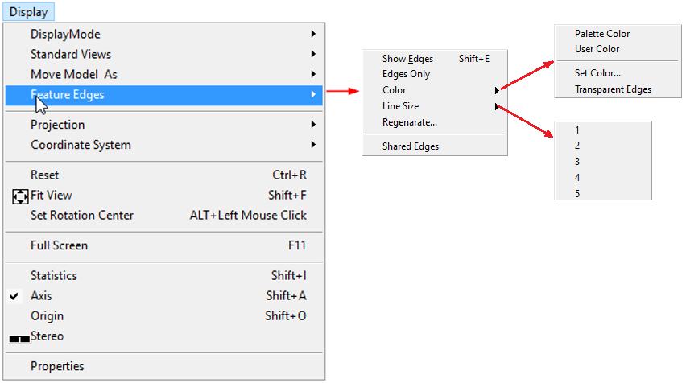
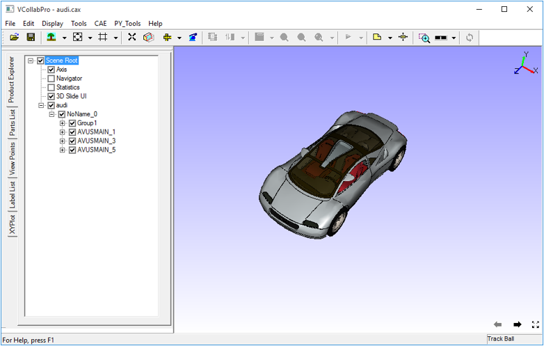
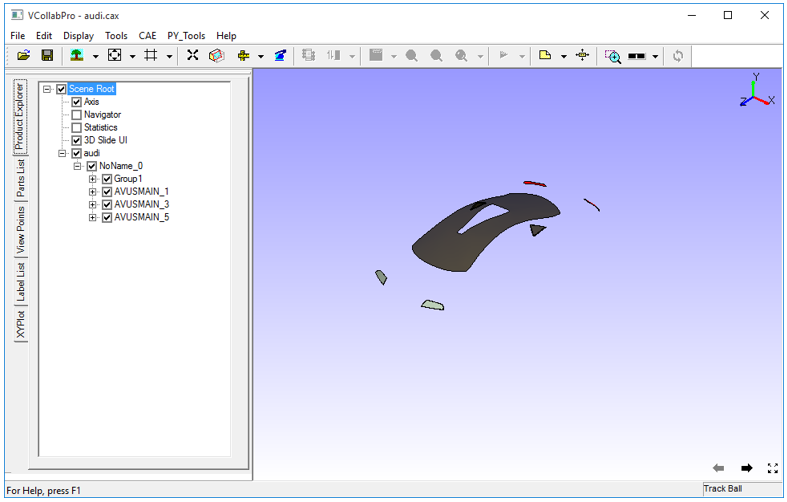
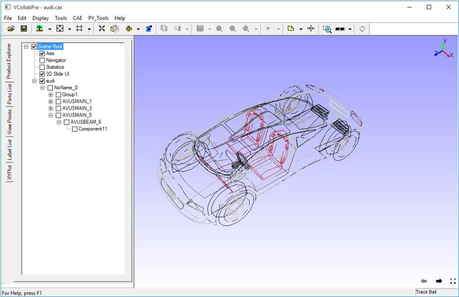
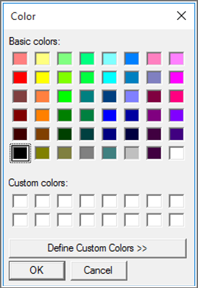
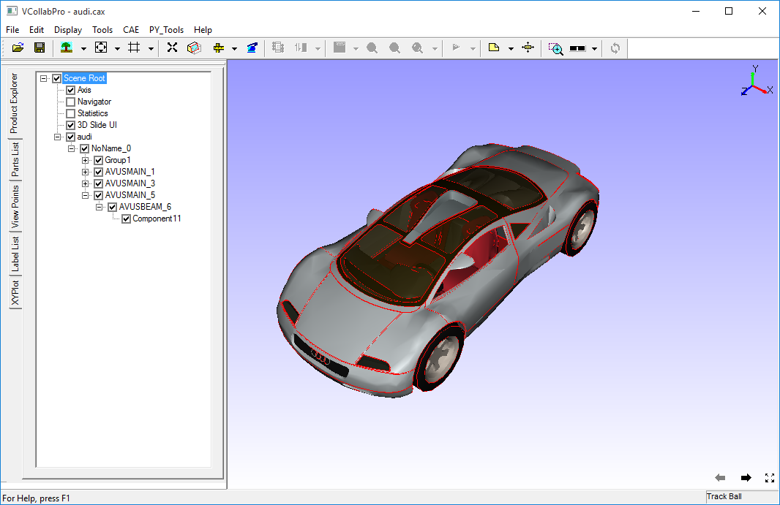
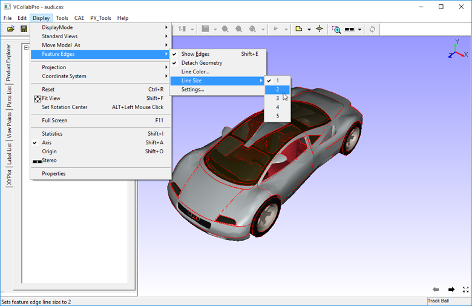
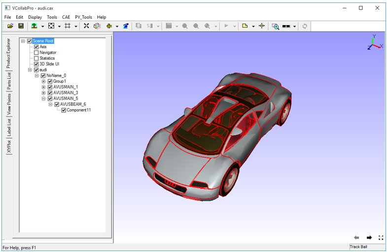
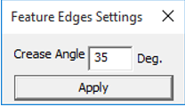
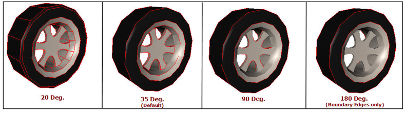

Feature Edges
The Feature Edges option found in the Display Menu helps to view feature edges with or without model.

The various options available under Features Edges are explained below.
| Show Edges | Shows/Hides Feature Edges |
| Edges Only | Displays the model only with Feature Edges |
| Color | Allows user to set user color or palette color. User can set transparency also. |
| Line Size | Set line width between 1 to 5. |
| Regenerate.. | Allows user to Change crease angle and regenerate feature edges. |
| Shared Edges | Allows user to show or hide feature edges shared between parts. |
Steps to display feature edges
Click Display |Features Edges| Show Edges.
It shows feature edges in default color.

Feature Edges are visible depending upon the visibility of part by default
If you hide a part, feature edges of that part will also be hidden.

Edges Only
To view feature edges only, click Display | Feature Edges | Edges Only.
Users can view the feature edges .

Changing Line Color
User can set user color or palette color.
To change the user color, click Display | Feature Edges | Color | Set Color...
Select a color in the dialog box and click OK


Changing Line Size
To increase the line size to 2, click Display | Feature Edges | Line Size | 2

The visibility of feature edges is improved by changing line size to 2 as below.

Changing Crease Angle
Feature edges depend on the crease angle between two triangles. Number of edges increases as the crease angle decreases. Default crease angle 35 degrees.
Change the crease angle by going to Display | Feature Edges | Regenerate....

Some edges appear or disappear based on the crease angle as shown in the images below.
